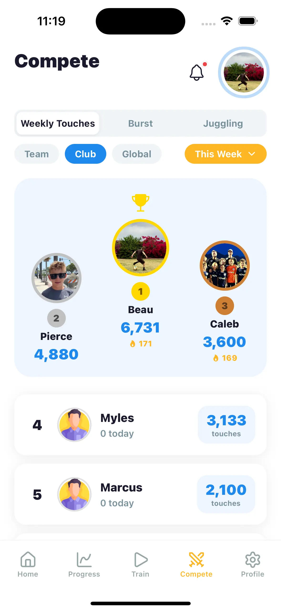

Kids practice soccer consistently when four things are true: progress is visible, there’s a streak to protect, today feels different from yesterday, and someone they care about can see the work. Build those four conditions and you can retire from the reminding business.
Why nagging fails (and what the data on habits says)
Every soccer parent has run the experiment: remind, remind, remind, escalate, give up. The problem is that nagging makes practice your goal, not theirs. The moment you stop pushing, the practicing stops — because the motivation lived in you.
Sustainable motivation is engineered, not demanded. The apps your kid already can’t put down — and the ones adults can’t either, like Strava and Duolingo — all run on the same four mechanics. They work just as well for ball work in the backyard.
The four mechanics that make kids want to practice
1. Visible progress
“You’re getting better” is a parent’s opinion. “Your weekly touches went from 1,900 to 2,758” is a fact the kid owns. Numbers make improvement undeniable, and undeniable improvement is addictive. That’s the entire case for tracking touches.
2. A streak worth protecting
Streaks flip the psychology of practice. Instead of “do I feel like training today?” the question becomes “am I really going to throw away 70 days?” Loss aversion is a stronger force than enthusiasm, and unlike enthusiasm, it shows up on rainy Tuesdays.
3. Novelty: today is different from yesterday
The same six drills forever is how home training dies. A daily challenge — new drill, new target, a video to copy, three minutes on the clock — gives every day its own hook. It’s the difference between “go practice” and “go beat today’s challenge.”
4. An audience that matters
Here’s the one parents underestimate: kids don’t train hardest for coaches or parents. They train hardest when teammates can see the scoreboard. A leaderboard where a rival is 300 touches ahead going into Sunday does what no amount of parental encouragement can.
Master Touch builds all four mechanics in
Progress rings and weekly charts make improvement visible. Day streaks and challenge streaks give kids something to protect. A new video challenge drops every day with Beginner to Advanced tiers. And the Compete tab puts the whole team on a leaderboard — touches and juggling, with podiums and medals that reset weekly so everyone gets a fresh shot. Coach Vinnie handles the daily pep talk so you don’t have to.
Download Free on the App Store
What parents should (and shouldn’t) do
- Do: help set a realistic daily goal — ten minutes, roughly 1,000 touches — and then let the streak do the reminding.
- Do: ask about the leaderboard, not the practicing. “Where are you this week?” lands very differently than “did you practice?”
- Do: celebrate streak milestones like you’d celebrate goals scored.
- Don’t: attach rewards to practice itself. The streak, the chart, and the podium are the reward; money muddies it.
- Don’t: panic over a broken streak. One reset with a shrug teaches resilience; one lecture teaches that the app is another chore.
When motivation still won’t come
Sometimes the honest answer is that the kid is tired, overscheduled, or just nine years old. Shrink the goal until it’s almost silly — five minutes, 300 touches — and protect the habit rather than the volume. A tiny daily habit restarts itself; a dead one has to be relaunched. For age-appropriate expectations, see how often kids should practice soccer.